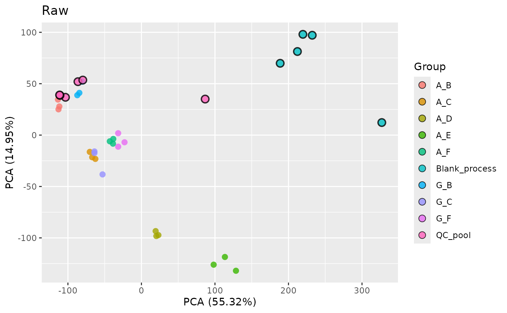
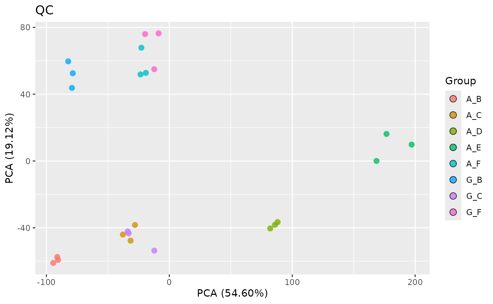
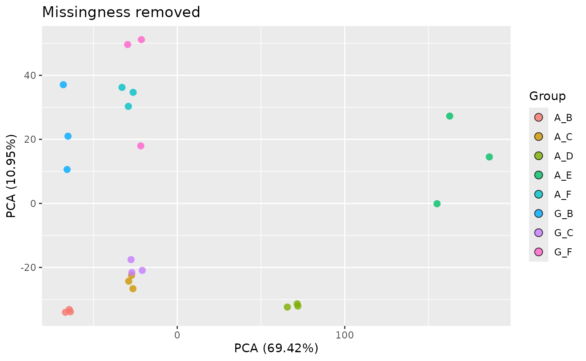
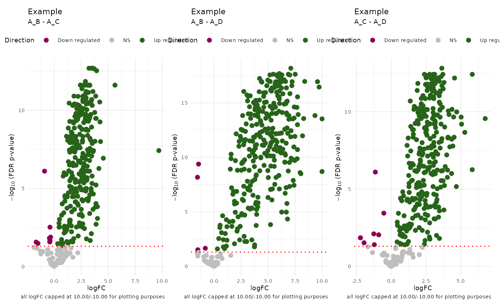

damR
damR.RmdUsage
library(damR)
exdata_path <- list.files(
system.file(package = "damR", "extdata"),
"example_data.csv",
full.names = TRUE
)Load and clean data
ReadFile() expects a wide-format dataset where the rows
are samples and columns are metabolites.
read.csv(exdata_path)[1:10, 1:5]
#> Sample Histidine_IP Glycine_IP Serine_IP Asparagine_IP
#> 1 S01a_A-B_01 45579054 76592811 38007391 4580929
#> 2 S01b_A-C_01 13072561 24625238 17531599 1551767
#> 3 S01c_A-D_01 4312298 7852034 6420602 289036
#> 4 S01d_A-E_01 1928348 1652953 NA 68157
#> 5 S02a_A-B_02 43441954 70070730 32944539 4117218
#> 6 S02b_A-C_02 14035246 26371310 16108976 1569177
#> 7 S02c_A-D_02 4481968 9056500 6310596 426139
#> 8 S02d_A-E_02 2350293 2699275 2089174 145032
#> 9 S03a_A-B_03 45869650 79937601 37503859 4729428
#> 10 S03b_A-C_03 14058030 25090665 16919752 1527971The Sample column should be in the form
SampleID_Subgroup1ID-Subgroup2ID_BatchNo to infer Sample,
Group, Subgroup, and Batch identifiers based on the “_” and “-”
delimiters. The Metabolite column must be in the form
MetaboliteName_ExtractionMethod for filtering based on
extraction method (IP/HILIC/T3Acidic).
(mdata <- ReadFile(exdata_path))
#> Sample SampleID Group Subgroup1 Subgroup2 Batch Metabolite
#> <char> <char> <char> <char> <char> <char> <char>
#> 1: S01a_A-B_01 S01a A_B A B 01 Histidine
#> 2: S01b_A-C_01 S01b A_C A C 01 Histidine
#> 3: S01c_A-D_01 S01c A_D A D 01 Histidine
#> 4: S01d_A-E_01 S01d A_E A E 01 Histidine
#> 5: S02a_A-B_02 S02a A_B A B 02 Histidine
#> ---
#> 16096: TC_QC-pool_2 TC QC_pool QC pool 2 D-Sphingosine
#> 16097: TC_QC-pool_3 TC QC_pool QC pool 3 D-Sphingosine
#> 16098: TC_QC-pool_4 TC QC_pool QC pool 4 D-Sphingosine
#> 16099: TC_QC-pool_5 TC QC_pool QC pool 5 D-Sphingosine
#> 16100: TC_QC-pool_6 TC QC_pool QC pool 6 D-Sphingosine
#> Type value
#> <char> <num>
#> 1: IP 25.44187
#> 2: IP 23.64004
#> 3: IP 22.04003
#> 4: IP 20.87893
#> 5: IP 25.37259
#> ---
#> 16096: T3Acidic 21.97819
#> 16097: T3Acidic 21.90662
#> 16098: T3Acidic 18.20672
#> 16099: T3Acidic 18.24809
#> 16100: T3Acidic 18.42540ReadFile() pivots the data from wide to long or tidy
form for the rest of the analysis.
QC
Each metabolite in the dataset may be sampled with multiple
extraction methods. For each metabolite, FilterExtraction()
selects the method with the fewest NAs or the lowest variation.
FilterBlanks() runs blank filtering to remove metabolites
from non-blank samples that fail to meet a specified fold-change
threshold compared to the same metabolites from blank samples. To
identify the data that get blank filtered without running the filtering,
use GetBlankDropTable() which FilterBlanks()
uses to identify the metabolites to remove as well as the blank
samples.
QCData is a top-level function that calls both
FilterExtraction() and FilterBlanks(), and
removes metabolites with low variance.
to_drop <- GetBlankDropTable(mdata)
head(to_drop$dropTable)
#> Batch Sample SampleID Group Subgroup1 Subgroup2 Metabolite
#> <char> <char> <char> <char> <char> <char> <char>
#> 1: 1 TC_QC-pool_1 TC QC_pool QC pool Hypoxanthine
#> 2: 1 TC_QC-pool_1 TC QC_pool QC pool Xanthine
#> 3: 1 TC_QC-pool_1 TC QC_pool QC pool Deoxyuridine
#> 4: 1 TC_QC-pool_1 TC QC_pool QC pool Adenine
#> 5: 1 TC_QC-pool_1 TC QC_pool QC pool Phenylalanine
#> 6: 1 TC_QC-pool_1 TC QC_pool QC pool Thymidine
#> Type value max_blank diff
#> <char> <num> <num> <num>
#> 1: IP 1.584963 1.000000 0.5849625
#> 2: IP 1.000000 2.321928 -1.3219281
#> 3: IP 11.315150 9.733015 1.5821342
#> 4: IP 21.131802 18.927622 2.2041806
#> 5: IP 18.291094 18.074695 0.2163987
#> 6: IP 2.000000 1.000000 1.0000000
to_drop$blanks
#> [1] "TC_Blank-process_1" "TC_Blank-process_2" "TC_Blank-process_3"
#> [4] "TC_Blank-process_4" "TC_Blank-process_5"
qc_data <- QCData(mdata)RemoveMissing() drops metabolites with more NAs than a
specified proportion. To just get those that would be removed, use
IdentifyMetabolites(). Use PlotMissingness to
get a presence/absence heatmap of your data.
head(IdentifyMissing(qc_data))
#> [1] "2'-Deoxycytidine" "2-Hydroxybutyrate"
#> [3] "2-Methylcitrate" "3-Hydroxyisobutyrate"
#> [5] "3-Methyl-2-oxovaleric acid" "4-Hydroxybutyrate"
rm_data <- RemoveMissing(qc_data)To examine your data before and after QC, you can use PCA:



Imputation
imputed_data <- impute.QRILC(rm_data)Model fitting
groups <- unique(imputed_data$Group)
results <- DiffMetabolites(imputed_data)
PlotVolcano(results, groups[c(1, 5)], contrastTitle = "Example")
PlotAllVolcanoes(results, groups[c(1:3)], contrastTitle = "Example") |>
wrap_plots()
Pipeline
fc_data <- ReadFile(exdata_path) |>
QCData() |>
RemoveMissing() |>
impute.QRILC() |>
DiffMetabolites()